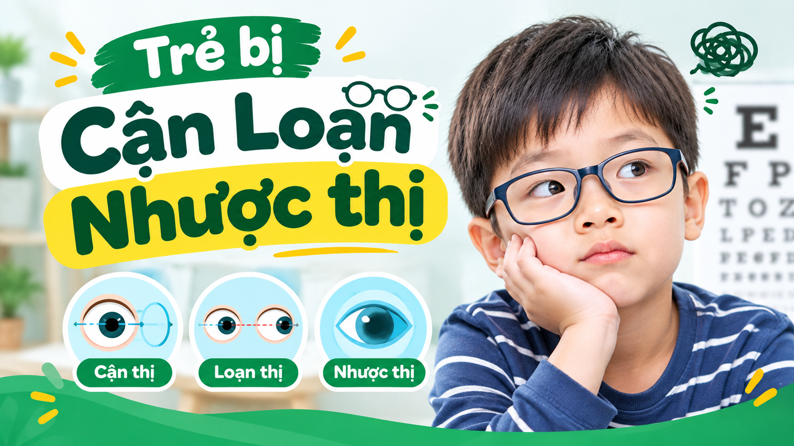
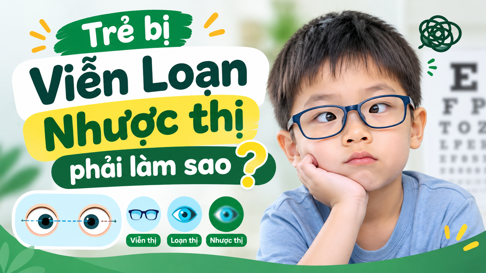
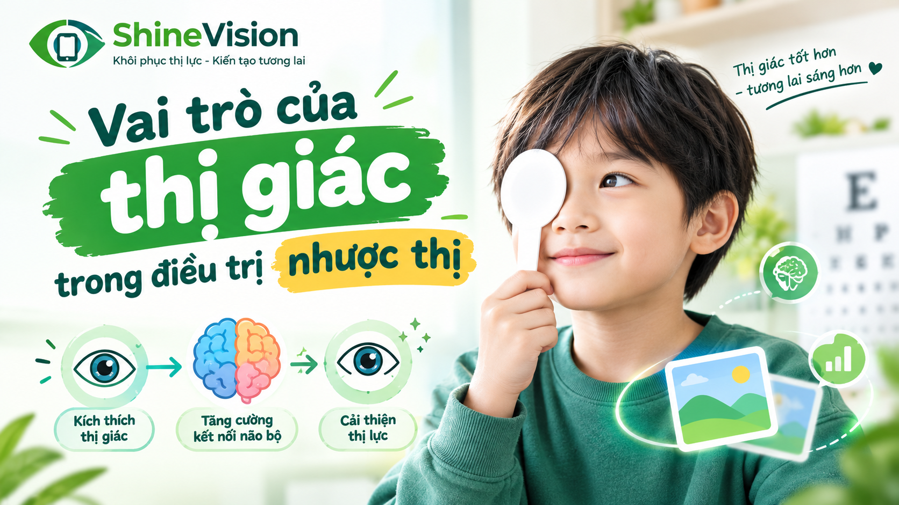
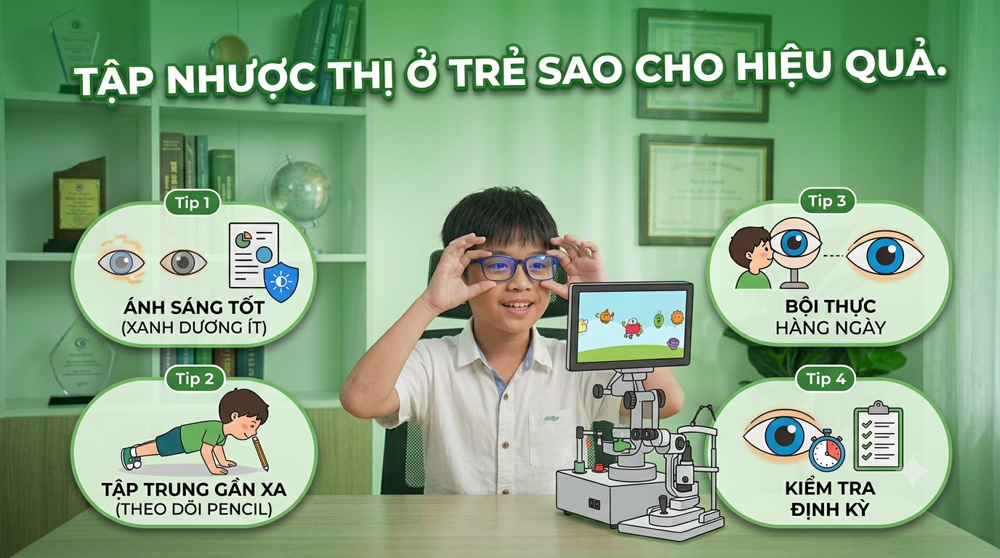
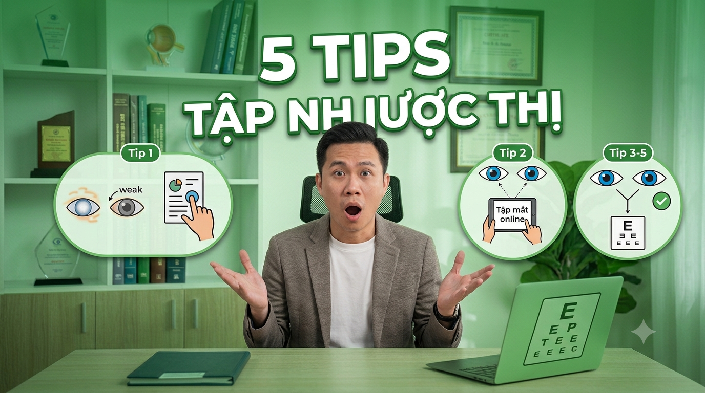
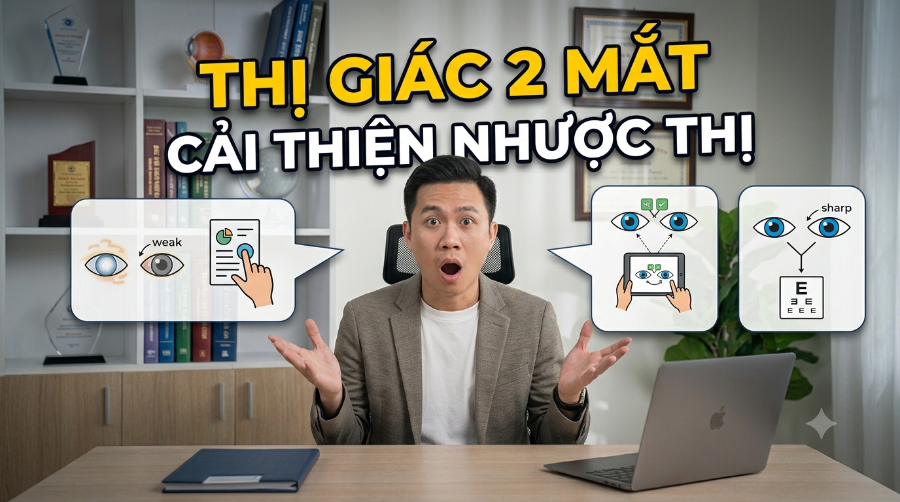
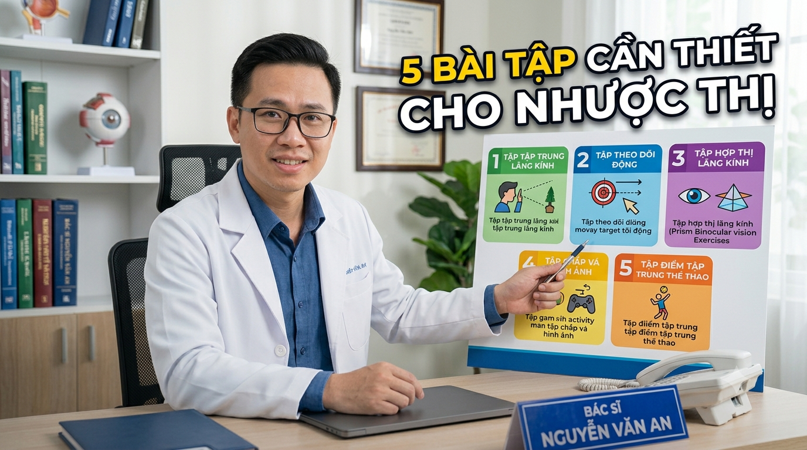
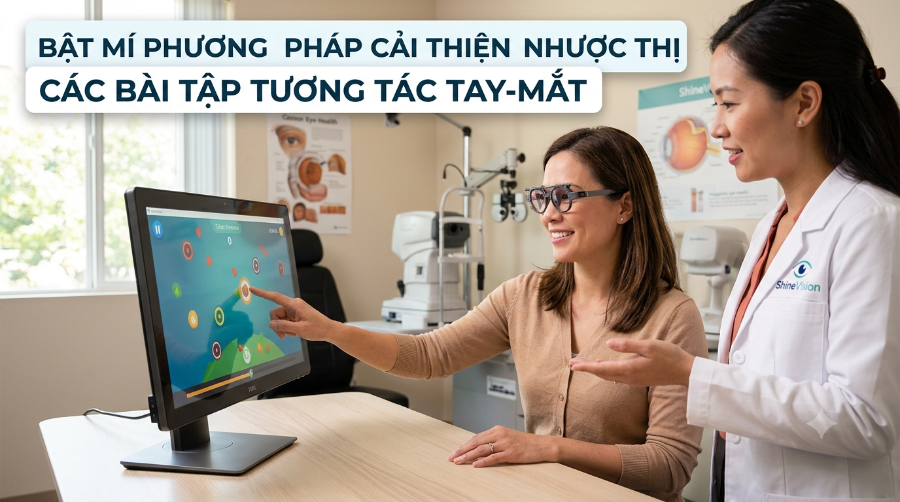
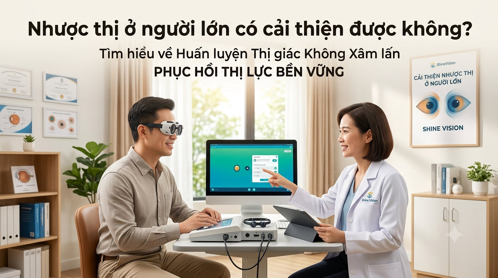

DANH SÁCH BÀI VIẾT & HƯỚNG DẪN TẬP THỊ GIÁC
Kiến thức chuyên sâu và giải pháp phục hồi Lác Lé, Nhược Thị không qua phẫu thuật xâm lấn

Nhược Thị Do Cận Loạn Phải Làm Sao? Phân Tích 2 Trường Hợp Và Hướng Cải Thiện Bền Vững
Giải mã 2 trường hợp nhược thị do cận loạn cao nhược đều 2 mắt và lệch độ khúc xạ, từ đó đưa ra hướng huấn luyện thị giác 2 mắt giúp phục hồi thị lực tận gốc.

Viễn Loạn Nhược Thị Thì Phải Làm Sao? Nguyên Nhân Và Giải Pháp Phục Hồi Bền Vững
Giải mã cơ chế viễn loạn gây lác trong điều tiết, làm mất thị giác hai mắt và hướng điều trị kết hợp đeo kính, tập luyện giúp bỏ kính khi ở độ tuổi sinh lý.
Trẻ Nhìn Nghiêng Đầu - Dấu Hiệu Cảnh Báo Rối Loạn Thị Giác Và Nguy Cơ Gây Nhược Thị
Giải mã nguyên nhân trẻ thường xuyên nhìn nghiêng đầu, rối loạn chức năng phối hợp hai mắt và giải pháp huấn luyện thị giác phục hồi không phẫu thuật.

Vai Trò Của Thị Giác Hai Mắt Trong Điều Trị Nhược Thị Bền Vững
Giải mã bản chất thần kinh thị giác của nhược thị và vai trò cốt lõi của thị giác hai mắt giúp phục hồi thị lực, hỗ trợ chỉnh lác lé không phẫu thuật.
Tại Sao Nên Sử Dụng App Tập Nhược Thị Tại Nhà? Giải Pháp Phục Hồi Thị Lực Bứt Phá
Giải mã những ưu điểm vượt trội khi sử dụng phần mềm tập nhược thị tại nhà: duy trì nhịp tập đều đặn hằng ngày, cá nhân hóa bài tập thị giác 2 mắt và tối ưu chi phí.

Tập Nhược Thị Cho Trẻ Sao Cho Hiệu Quả? Yếu Tố Cốt Lõi Phụ Huynh Cần Biết
Giải mã chìa khóa tập luyện đều đặn, liên tục hằng ngày và lý do tại sao phần mềm tập nhược thị tại nhà lại là giải pháp tối ưu nhất cho trẻ.

5 Tips Tập Nhược Thị Hiệu Quả Ở Người Lớn Giúp Bứt Phá Thị Lực
Bật mí 5 tips tập nhược thị hiệu quả ở người lớn dựa trên cơ chế dẻo thần kinh não bộ giúp phục hồi lác lé và nhược thị bền vững cho người trên 18 tuổi.

Thị Giác 2 Mắt Là Gì Mà Có Thể Nhanh Chóng Cải Thiện Nhược Thị?
Giải mã bản chất thị giác 2 mắt và cơ chế kích thích hợp thị giúp đánh thức mắt yếu, bứt phá thị lực nhược thị bền vững không xâm lấn.

5 Bài Tập Cần Thiết Cho Nhược Thị Giúp Tối Đa Hóa Khả Năng Phục Hồi Thị Lực
Tổng hợp 5 bài tập cốt lõi cải thiện nhược thị và lộ trình phân cấp độ bài tập chuẩn khoa học giúp phục hồi thị lực trên ShineVisionApp.

Bật Mí Phương Pháp Cải Thiện Nhược Thị - Các Bài Tập Tương Tác Tay - Mắt
Khám phá cơ chế liên kết vận động - thị giác và các bài tập tương tác tay - mắt chuẩn khoa học giúp phục hồi lác lé, nhược thị bền vững.

Nhược Thị Ở Người Lớn Có Cải Thiện Được Không? Giải Đáp Từ Góc Nhìn Khoa Học
Giải mã cơ chế dẻo thần kinh não bộ và phương pháp huấn luyện thị giác hai mắt không xâm lấn giúp cải thiện thị lực cho người trên 18 tuổi.
Tại Sao Ngừng Tập Nhược Thị Phục Hồi Lại Bị Tái Lại? Nguyên Nhân Và Cách Khắc Phục
Giải mã cơ chế tái phát nhược thị sau khi dừng tập luyện và phương pháp huấn luyện phục hồi bền vững không phẫu thuật.